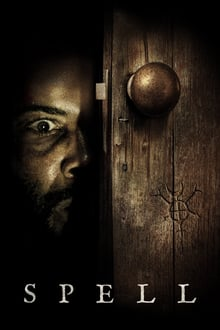

Vikings(2013)
Ragnar Lothbrok, um jovem que se considera descendente de Odin, é um guerreiro, fazendeiro e chefe
de família.
Visionário e sonhando viver diversas aventuras, ele acredita que as riquezas sonhadas por seu povo
encontram-se além do mar Báltico. Mas para conseguir conquistá-las ele precisa convencer Earl
Haraldson,
o líder de seu povo, a permitir que ele e seus guerreiros viagem em direção à Inglaterra.
Em destaque


